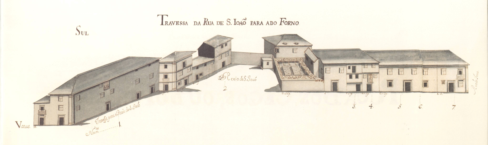

Travessa da Rua de S. João para a do Forno - vista norte.

Travessa da Rua de S. João para a do Forno - vista sul.
Travessa da Rua de S. João para a do Forno - vista norte.
Travessa da Rua de S. João para a do Forno - vista sul.
Rua em forma de cotovelo, tendo uma espécie de protuberância no ângulo, mais parecendo duas vias que se encontrava num ponto que se alargava, formando aí um «Rexio».
Seria um pouco estranho de compreender o seu traçado, se não soubessemos que no ponto onde se encontrava os seus troços Sul e Oeste terá passado, possivelmente, a muralha da cidade romana. Só assim se pode aceitar que esta artéria não tivesse sequência até à Igreja de S. João de Souto , ou à Porta de S. João .
Sem unidade no tipo de casas que a formavam, tinha prédios de dois pisos, alternando com outros de três ou até um; edifícios com longa fachada, a par com outros de pequena e média dimensão.
Todas as casas são de arquitectura tradicional, talvez na sua maioria em pedra, com seis raras varandas e apenas três gelosias, e uma forte percentagem (60%) de janelas típicas de Braga . De notar a casa grande situada no canto Sudoeste do «Rexio de S. João» que tem um grande terreno de cultivo virado à rua, estando o prédio implantado atrás, na linha de barreira que fecha a Sul o «Rexio».
Das 10 casas existentes do lado Norte e outras tantas do lado Sul são prazos do Cabido 5 e 6 respectivamente.
Se bem que todo o bairro a Sul da Sé , pelo entrecruzar de ruas, seja conhecido como Bairro das Travessas é muito estranho e nada aceitável o nome desta rua que ora tratamos. Na Idade Média a parte Este desta artéria, que no Mappa tem o nome de «Travessa para a rua de S. João» , era conhecida como rua da Carrapata e a parte Sul, sem designação especial no Mappa, tinha o nome de Paio Manta , talvez uma pessoa dominante que aí vivesse. No séc. XVI, a rua de Paio Manta tomou o nome de rua Coelho que manteve até 19/12/1892 , data em que passou a denominar-se de El-Rei . Em 24 de Fevereiro de 1944 recebeu o nome de D. Afonso Henriques .
Desde 1892 que esta rua está muito alterada, embora se mantenha a sua função: A rua de «Coelho» foi alargada, o «Rexio de S. João» desapareceu e a «Travessa para o Rexio de S. João» integrou o novo largo de S. João de Souto , então formado juntamente com parte da rua de S. João e outros terrenos. Grosso modo, podemos dizer que esta travessa se integra hoje na rua D. Afonso Henriques e Largo de S. João de Souto .

Travessa da Rua de S. João para a do Forno

Travessa da Rua de S. João para a do Forno
Enfiteuta: None
Foro: None
Descrição:
Enfiteuta: None
Foro: None
Descrição:
Enfiteuta: Teresa de Araújo, mulher de Manuel de Sousa, vidraceiro
Foro: 240 reis e 1 capão
Descrição:
Enfiteuta: Manuel de Faria
Foro: 400 reis e 1 capão
Descrição:
Enfiteuta: Carlos de Magalhães de Azevedo, Cónego
Foro: 475 reis e 2 capões
Descrição:
Enfiteuta: Carlos de Magalhães de Azevedo, Cónego
Foro: 250 reis e galinhas
Descrição:
Enfiteuta: Félix José Machado
Foro: 420 e 4 galinhas
Descrição:
Enfiteuta: Enfiteuta não encontrado
Foro: Foro não encontrado
Descrição:
Enfiteuta: Enfiteuta não encontrado
Foro: 115 reis e 8 pretos (de censo)
Descrição:
Enfiteuta: Padre Luís de Faria
Foro: 100 reis e 1 galinha
Descrição: Descrição não encontrada
Enfiteuta: Lic. Manuel de Faria da Cunha
Foro: 70 reis e 1 galinha
Descrição:
Enfiteuta: Manuel Francisco, alfaiate
Foro: 410 e 4 galinhas
Descrição: